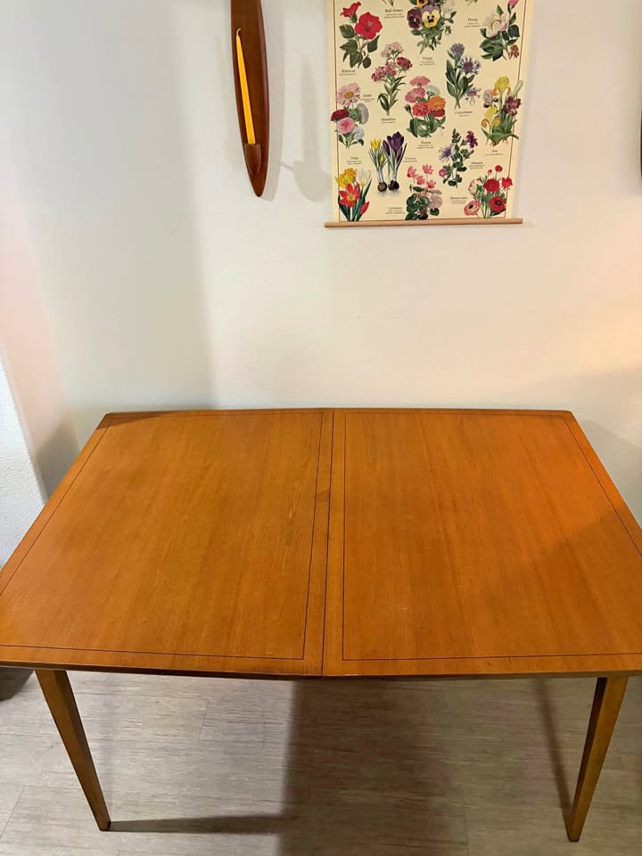

461 Anderson — Dining Table Watch
Mid-century modern · extendable to seat 8 · Danish teak/walnut preferred · driveable from the Bay Area
Updated September 6, 2026Current, click-verified, in-budget picks only · ★ value = price vs. quality
⚡ Look at right away
- 🆕 A new listing went up an hour ago: San Jose, $400, table PLUS six chairs. A single-owner stamped "Monaco Walnut" at 60" × 40" on four square tapered legs, with leaves the seller says add up to another 4½ feet — so roughly 114" fully out, the longest on the board, and the widest top here by four inches. For $400 with six chairs it is the cheapest complete dining room this search has ever surfaced. Two real catches: "Monaco" is an American walnut line, not Danish, and the seller states the leaves are as-is with one water-damaged and one that "appears added to the set" — i.e. not matching. Ask how many matching leaves there are before you drive. View listing
- ⏳ Two picks expire this week. The SF Ansager $950 goes dark Sep 11 (5 days) and the Palo Alto $580 on Sep 12 (6 days). Between them they are the board's best turn-key Danish table and its cheapest whole room. If either is on your list, this is the week.
- ✅ Nothing was lost this run — the first stable day in a while. All eight tables and both chair listings re-opened live at unchanged prices, after last run's five-listing clear-out. That stability is itself information: what survived is what the market has already passed over.
- ⚠ The San Rafael Ansager $800 is now nine days up — and the seller refreshed it four days ago. Stamped Ansager Møbler, four square tapered legs, photographed fully extended, live through Sep 27. A seller who bumps a listing is a seller who hasn't sold it. The extended length is still not stated. Call, don't message — ask for the open length first.
- 🌟 Sausalito's seven teak chairs at $250 are still the only chair set on the board — unchanged and still live at ~$36 a chair, now three weeks up. A new D-Scan listing appeared in Novato but it is only three chairs, in fair condition, needing both refinishing and reupholstery at $100 each. No competition.
Budget $1,000–$2,000 (table alone) · extends to ≥84" · Danish teak/walnut/rosewood · four legs (no pedestal/trestle)
Tables · in budget

Skovby Walnut Extendable Dining Table + 6 Chairs
A Skovby — a priority Danish maker — reaching 102½" on four clean square tapered legs, plus six chairs, for $1,600. Subtract the chairs at $100–200 each and the table lands around $700–$1,000. Still the only named Danish workshop on the board that also solves the chairs.

Ansager Møbler Danish Teak Extendable Dining Table
A labelled and stamped Ansager Møbler — the priority Danish maker — for $800, photographed fully extended on four square tapered legs. The seller notes these fetch $4,000 restored. Still the cheapest genuinely-Danish table on the board and the only stamped priority maker under $900. It would be a flat 5/5 if the listing said how long it actually gets.

Danish Modern Teak Draw-Leaf by Ansager Møbler
A confirmed Ansager Møbler, freshly refinished to like-new, 93" with its dimensions actually stated — the one thing San Rafael still can't give you. It remains the only turn-key priority-maker table on the board, and it expires Sep 11.

Vintage Danish Modern Teak Extension Table
A stamped Made in Denmark teak extension table that opens to 93" with the dimensions spelled out, holding at $600 into a sixteenth week. It slips behind the two Ansagers only because the workshop is unnamed and the top has more visible wear — but on dollars-per-inch of genuine Danish teak, nothing here beats it.

Vintage MCM Teak Dining Set — Table + 6 Chairs
A full solid-teak set — table plus six matching teak chairs — for $580, on four clean tapered legs, in excellent condition. Since the budget is for the table alone, six chairs (worth ~$600–1,200) come essentially free. Only the 87" extension keeps it out of the top three. It expires Sep 12.

Mid Century Draw-Leaf Dining Table — Danish Teak
The cheapest table-only pick on the board, and it clears the length gate: 87" extended, solid Danish teak, matching leaves that nestle under the top, four tapered dowel legs. Two things hold it at four stars — it is honestly described as "fair", and at 32¼" deep it is the narrowest top here.

Mid-Century "Monaco Walnut" Dining Table + 6 Chairs
On pure arithmetic this is the best value the search has produced: $400 for a stamped single-owner walnut table plus six original chairs, 60" × 40" — the widest top on the board by four inches — on four square tapered legs, opening to roughly 114". It loses a star for two honest reasons: "Monaco" is an American walnut line, not Danish, and the leaves are the weak point.

Midcentury Danish Teak Draw-Leaf Table + 6 Chairs
The longest Danish complete room on the board: 96" extended on four tapered legs, with six matching Benny Linden slat-back chairs in clean, stain-free cream fabric — no recovering project, unlike the Skovby set. Netted of chairs the table is $800–$1,400. What holds it to four stars is the "+ Tax" and the missing maker's stamp.

Vintage Danish Teak MCM Expandable Dining Table
Honest Danish teak at 94" extended — but you're buying largely on trust. Six weeks on and there is still no photograph of it assembled, no maker mark, and the listing quotes two different prices.
How they compare in one line each:
Redwood City Skovby $1,600 — priority maker, 102½", tapered legs, six chairs thrown in.
San Rafael Ansager $800 — a stamped priority maker for $800, if the length checks out.
SF Ansager $950 — refinished, 93" confirmed, zero work — but expires in 5 days.
San Rafael $600 — Made in Denmark, 93", best dollars-per-inch, more top wear.
Palo Alto $580 — cheapest whole Danish-style room, excellent condition, 87", expires in 6 days.
Walnut Creek $550 — 87" of Danish teak at the lowest table-only price, but narrow and "fair".
San Jose $400 — NEW: widest and longest here with six chairs, but American walnut and the leaves are compromised.
Hayward $1,995 — 96" plus six clean chairs, but "+ tax" and no stamp.
Emeryville $950 — ask for an assembled photo first.
The state of play. After last run's five-listing clear-out, nothing moved this run — every table and both chair sets re-opened live at unchanged prices. Read that two ways. The good news is the board is no longer evaporating under you. The less good news is that what remains is what the market has already walked past: the San Rafael Ansager is nine days up and freshly bumped, the San Rafael $600 is in its sixteenth week, the Palo Alto set is 28 days up. The two genuinely fresh things on this page — the San Jose $400 (one hour) and the Hayward set (four days) — are also the two with the biggest asterisks. Meanwhile two of the best picks expire within the week. If the plan is to buy a Danish table rather than keep watching one, the SF Ansager at $950 is the cleanest execution available and it goes dark on Friday.
New this run — and what it cost to rule out: the San Jose "Monaco Walnut" $400 is on the board above with its caveats. Ruled out: Novato D-Scan teak chairs ($300, cut from $325, just listed) — only three chairs (one arm, two side), used–fair, needing both a refinish and new upholstery, and D-Scan is Singapore-made. Danville "Rarely Used" $400 — the listing calls it farmhouse style, not mid-century. Fairfax $150 — custom-made Douglas fir and iron. Livermore $10 and a free Redwood City table — not MCM, not extendable. Vintage MCM glass & brass, $125 — glass top.
Ruled out (standing): Dyrlund teak ($1,700, Hayward) — ceramic-tile inlay and a trestle base. Meredew butterfly-leaf teak ($1,450, SF), "Teak Dining Table One Butterfly Leaf" ($1,280, SF), McIntosh oval ($1,450, SF), SF butterfly-leaf teak ($1,680) — all U.K. imports, several saying so in the listing itself. Gangø teak ($850, SF) — ~63". E. Valentinsen rosewood ($1,175, Walnut Creek) — twin-pedestal. Gudme Møbelfabrik rosewood ($700, SF) — twin-pedestal. Gudme Møbelfabrik ($550, Santa Rosa) — round on a pedestal. SF "Danish mid century modern extendable" ($700 and $725) — pedestal, stated in the title. SF "Modern danish teak oval" ($500) — dual-pedestal trestle. Vejle Stole Møbelfabrik ($1,995, SF) — priority maker but only 76" extended. Sonoma Skovby ($800) — twin cylindrical pedestal, peeling veneer. John Keal walnut ($975, Santa Rosa) — round on a slatted pedestal. Ansager Møbler square draw-leaf ($650, cut from $750, Walnut Creek) — priority maker, real price drop, but only 67" fully extended. Richmond teak-and-oak ($1,075) — still no dimensions. SF "Teak Dining Table with Pull Out Leaves" ($1,695) — 83", one inch short. Roseville teak ($1,500) — no maker, no dimensions, ~2 hours out. Millbrae ($799) — 100" but arched trestle base. Los Gatos ($1,000) — 78". El Cerrito ($1,150) — two separate gate-leg tables. Fremont 1970s draw-leaf ($450) — made in Singapore, no dimensions. Novato built-in-leaf ($1,750) — trestle. Albany draw-leaf ($1,000) — 67". Alameda ($1,250) — 72" max, laminated top. Modesto teak ($520) and Sacramento MCM teak ($680) — no dimensions / trestle, outside the drive radius. Benny Linden table ($1,290, Sacramento) — outside the radius. Stockton chevron-top sets ($1,250 and $1,255) — parquet tops, not Danish. Stanley "Walnut" drop-leaf + 6 chairs ($850, SF) — American maker, drop-leaf. Castlery "Seb" ($900, San Jose), West Elm ($200) and Crate & Barrel "Tate" ($1,000, Portola Valley) — current-production retail. Oakland oval ($1,750), Refinished Skovby ($2,950), San Jose "large conference" teak ($2,999), Sonora sunburst ($2,000, round), Børge Mogensen drop-leaf ($3,200), Stickley walnut ($3,500), Martinez ($180, too small), and SF tables at $2,200, $2,450, $2,500 and $2,800 — over or under spec. Heywood-Wakefield ($895) — American. Nathan, Remploy, G-Plan and other UK imports.
Gone in the last week (for reference): the Petaluma $1,200 Made-in-Denmark draw-leaf (90.5", four tapered legs, photographed extended) — unavailable after three days. The SF Ansager XL $1,700 (112" × 48", the largest table this search ever found) — deleted by its author. The Oakland Skovby $1,200 (110" cherry oval) — out of stock. Plus two chair sets. The lesson stands: anything Danish, dimensioned and under $1,300 clears in under a week.
Watchlist: the Gudme Møbelfabrik walnut expandable, $2,050 (Folsom — priority maker, 63¼" → 101½", original table pads, delivery included, $50 over the ceiling) sits outside the 40-mile Marketplace radius and the SF Bay Craigslist region, so it still cannot be re-verified from here. Last seen unchanged at $2,050 on a listing running to roughly Sep 11 — i.e. it may already be gone. If it matters, search Marketplace from a Sacramento location by hand in the next few days.
⚡ Chairs — quick read
- 🌟 Sausalito's seven teak chairs at $250 are still the only set of 6+ on the board — re-verified live and unchanged at ~$36 a chair, now three weeks up. Benny Linden, Danish-modern spindle backs, cushioned seats, used–good. Three weeks is far longer than a set this cheap should last. Go look.
- 😕 The one new chair listing this run doesn't help. A D-Scan set in Novato appeared at $300 (cut from $325) — but it is three chairs, one armchair plus two sides, in used–fair condition, and the seller is upfront that they need both a refinish and new upholstery. At $100 a chair before you spend anything, it is three times Sausalito's price for a third of the seats. D-Scan is also Singapore-made, not Danish.
- ⚠ The four Danish teak chairs in SF, $600, are still live through Sep 19. Solid old-growth teak, cleaned, oiled and newly reupholstered in green wool, like-new — the same Mission-District seller as the SF Ansager table, so it's a one-stop pickup. But it is four chairs at $150 each, so it's a component, not a room.
- 🏆 Three table picks now bundle six chairs. The Redwood City Skovby $1,600 (chairs stained — budget ~$200–300 to recover), the Hayward $1,995 (six Benny Linden slat-backs, clean and stain-free), and now the San Jose $400 (six chairs in original green MCM wave-pattern fabric). With standalone sets this thin, buying a table that comes with chairs is still the shortest path to a finished room.
- 💭 Still no standalone set of eight. Eight runs since the D-Scan eight sold. Seven-plus-one remains the realistic route: Benny Linden chairs are common and cheap, so a matching eighth is findable — or simply run seven around a 93" table.
Budget $1,200–$2,400 for six · MCM teak/walnut that coordinates with the table · easy, clean fabric · driveable / delivers
Chairs · sets of 6+ · in budget

7 Benny Linden Teak Dining Chairs — Set of 7
Seven teak chairs for $250 — ~$36 a chair — with tall sculptural spindle backs, tapered legs and plain cushioned seats. The cheapest seating this search has found by a factor of three, the only set above six, and still the only standalone set on the board. The single reason it isn't 5/5 is that Benny Linden is Danish-modern style, not a Danish workshop.
Chairs · partial sets worth a look

Four Danish Modern Teak Dining Chairs
Solid old-growth teak, cleaned, oiled and newly reupholstered in green wool — like-new, nothing to do. Four stars' worth of quality at a three-star count: $150 a chair for four is four times Sausalito's price per seat, and four chairs do not furnish a table that seats eight.
The trade-off in one line: Sausalito, $250 remains the only standalone set on the board and buys seven teak chairs for less than the cost of recovering any six — the obvious first call, with the caveat that they are Danish in style only. Everything else means buying a table that comes with chairs: the Redwood City Skovby (six, stained), the Hayward set (six, clean), or the new San Jose $400 (six, original green fabric).
Seen but set aside: Mid-1960s D-Scan teak, 3 chairs ($300, cut from $325, Novato) — new this run; only three, fair condition, needs refinishing and reupholstery, Singapore-made. Set of 6 Danish-style teak by Sun Furniture ($750, Berkeley) — sold. Six Danish Modern teak, reupholstered purple ($1,000, SF) — deleted. Four Henning Kjærnulf for Vejle Stole Møbelfabrik, 1960s ($900, Richmond) — a priority Danish maker, but only four chairs at $225 each. Set of 8 D-Scan teak ($1,000, Richmond) — sold. Four D-Scan teak chairs ($600, Santa Rosa) — gone. Set of 8 Danish teak, free delivery ($1,600, San Rafael) — sold. Set of 6 D-Scan teak ($1,200, Novato) — pricier per chair. Six H.W. Klein for Bramin, refinished ($2,795, Richmond) and Johannes Andersen teak 6 ($2,650) — over the $2,400 ceiling. Nathan teak 6 ($1,280, SF) — UK import. Sunnyvale MCM arm chairs ($400) — grey tweed, not teak-toned. A floral-upholstered 6 ($2,400) — busy fabric.